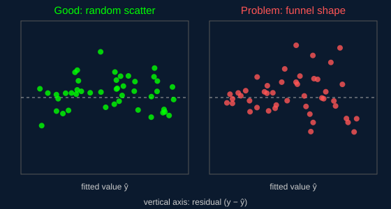

When Can We Trust the Line?
Least squares will always produce a line, even for data that is not linear at all. The coefficients, confidence intervals, and p-values are only reliable when a few conditions hold. A common memory aid is LINE: Linearity, Independence, Normality, and Equal variance.

The Four Assumptions
Linearity
The average value of y really does change in a straight-line way as x changes. A curved pattern in the residuals means a straight line is the wrong shape.
Independence
Each observation's error is unrelated to the others. This is often broken by time-series data, where today's value tends to resemble yesterday's.
Normality
The errors follow a roughly bell-shaped distribution. This matters most for hypothesis tests and intervals in small samples; a Q-Q plot is the usual check.
Equal Variance
Also called homoscedasticity: the spread of the residuals stays about the same across all fitted values. A funnel shape signals that it is violated.
Common Pitfalls & Fixes
Outliers
Because errors are squared, one extreme point can drag the whole line toward it. Investigate unusual points rather than deleting them automatically, or consider a robust regression method.
Multicollinearity
When two inputs are highly correlated with each other, their individual coefficients become unstable and hard to interpret. Dropping or combining features can help.
Non-linear patterns
Transforming a variable (for example, taking a logarithm) or adding a squared term often lets a "linear" model capture a curve, because the model only needs to be linear in its coefficients.
Extrapolation
Predictions far outside the range of the training data are risky; the relationship may not continue in the same way beyond what was observed.
Correlation Is Not Causation
Even a model that meets every assumption only shows that two variables move together. A strong slope does not prove that changing x will cause y to change; a hidden third variable could be driving both. Establishing cause usually requires a controlled experiment or a careful causal analysis.